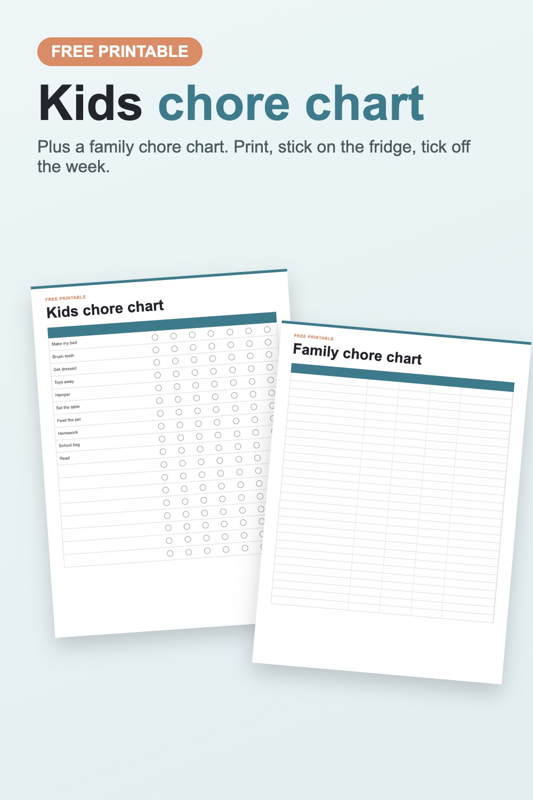

Two pages that get everyone helping at home: a kids chore chart to tick off every day, and a family chart that shows who does which chore. No sign-up, just download.
Download free PDF (A4)Download free PDF (US Letter)
The 32-page Cleaning Planner adds daily, weekly and monthly cleaning schedules, checklists for 6 rooms, a 30-day declutter challenge, a laundry routine and a stain removal guide. Hyperlinked for iPad.
See the cleaning plannerMore free printables: free cleaning checklist, free monthly budget template.